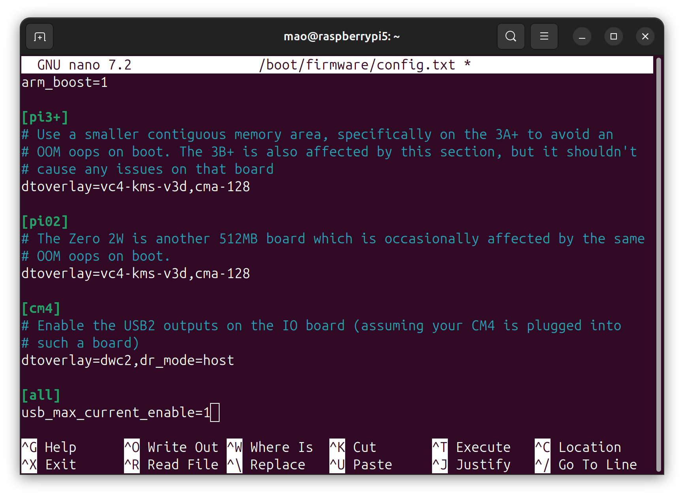

環境
- Raspberry Pi 5 Model B 8GB（この記事では"ラズパイ5"と記載）
- KIOXIA SATA SSD 480GB
- Ubuntu 24.04.1 LTS aarch64
- USB-SATA変換アダプタ
- Raspberry Pi Imager v1.8.5
ラズパイ5を起動する準備
“Raspberry Pi Imager"を使用して、SSDにOSイメージを書き込みます


 書き込みが完了
書き込みが完了
ラズパイ5にUSB-SSDとLANケーブル、電源ケーブルを接続します
電源を入れて30秒程たったら電源ボタンを押します（電源容量不足の警告が出るため）
すると、bootが始まります
別のPCからsshでログインします
SSHで接続する
1
|
ssh mao@raspberrypi5.local
|
- パスワードが求められるので入力する
- IPアドレスがわからなくても接続できる
必要なソフトウェアをインストール
1
2
|
sudo apt install neofetch
sudo apt install nano
|
電源容量不足の警告が出ないようにする
“/boot/firmware/config.txt"に"usb_max_current_enable=1"を追加する
1
|
sudo nano /boot/firmware/config.txt
|

neofetch
1
2
3
4
5
6
7
8
9
10
11
12
13
14
15
16
17
18
19
20
21
22
23
|
mao@raspberrypi5:~$ neofetch
.-/+oossssoo+/-. mao@raspberrypi5
`:+ssssssssssssssssss+:` ----------------
-+ssssssssssssssssssyyssss+- OS: Ubuntu 24.04.1 LTS aarch64
.ossssssssssssssssssdMMMNysssso. Host: Raspberry Pi 5 Model B Rev 1.0
/ssssssssssshdmmNNmmyNMMMMhssssss/ Kernel: 6.8.0-1010-raspi
+ssssssssshmydMMMMMMMNddddyssssssss+ Uptime: 5 mins
/sssssssshNMMMyhhyyyyhmNMMMNhssssssss/ Packages: 739 (dpkg), 2 (snap)
.ssssssssdMMMNhsssssssssshNMMMdssssssss. Shell: bash 5.2.21
+sssshhhyNMMNyssssssssssssyNMMMysssssss+ Terminal: /dev/pts/0
ossyNMMMNyMMhsssssssssssssshmmmhssssssso CPU: (4) @ 2.400GHz
ossyNMMMNyMMhsssssssssssssshmmmhssssssso Memory: 183MiB / 7937MiB
+sssshhhyNMMNyssssssssssssyNMMMysssssss+
.ssssssssdMMMNhsssssssssshNMMMdssssssss.
/sssssssshNMMMyhhyyyyhdNMMMNhssssssss/
+sssssssssdmydMMMMMMMMddddyssssssss+
/ssssssssssshdmNNNNmyNMMMMhssssss/
.ossssssssssssssssssdMMMNysssso.
-+sssssssssssssssssyyyssss+-
`:+ssssssssssssssssss+:`
.-/+oossssoo+/-.
mao@raspberrypi5:~$
|

ディスク容量の確認
下記コマンドを実行する
1
2
|
sudo fdisk -l
df -h --total
|
実行結果
1
2
3
4
5
6
7
8
9
10
11
12
13
14
15
16
17
18
19
20
21
22
23
24
|
mao@raspberrypi5:~$ sudo fdisk -l
Disk /dev/loop0: 33.71 MiB, 35344384 bytes, 69032 sectors
Units: sectors of 1 * 512 = 512 bytes
Sector size (logical/physical): 512 bytes / 512 bytes
I/O size (minimum/optimal): 512 bytes / 512 bytes
Disk /dev/loop1: 38.57 MiB, 40443904 bytes, 78992 sectors
Units: sectors of 1 * 512 = 512 bytes
Sector size (logical/physical): 512 bytes / 512 bytes
I/O size (minimum/optimal): 512 bytes / 512 bytes
Disk /dev/sda: 447.13 GiB, 480103981056 bytes, 937703088 sectors
Disk model: XCERIA SATA SSD
Units: sectors of 1 * 512 = 512 bytes
Sector size (logical/physical): 512 bytes / 512 bytes
I/O size (minimum/optimal): 512 bytes / 33553920 bytes
Disklabel type: dos
Disk identifier: 0x9b94b926
Device Boot Start End Sectors Size Id Type
/dev/sda1 * 2048 1050623 1048576 512M c W95 FAT32 (LBA)
/dev/sda2 1050624 937703054 936652431 446.6G 83 Linux
|
1
2
3
4
5
6
7
8
9
10
|
mao@raspberrypi5:~$ df -h --total
Filesystem Size Used Avail Use% Mounted on
tmpfs 794M 3.2M 791M 1% /run
/dev/sda2 440G 2.2G 420G 1% /
tmpfs 3.9G 0 3.9G 0% /dev/shm
tmpfs 5.0M 0 5.0M 0% /run/lock
/dev/sda1 505M 91M 414M 18% /boot/firmware
tmpfs 794M 12K 794M 1% /run/user/1000
total 446G 2.3G 426G 1% -
mao@raspberrypi5:~$
|
シャットダウン
1
|
sudo systemctl poweroff
|